<style>
  .tg {
    --paper: #f3ecdd;
    --paper-warm: #ebe1cb;
    --ink: #1c1612;
    --ink-soft: #4a3f33;
    --forest: #2b4636;
    --forest-deep: #1d3127;
    --slate: #4d6471;
    --amber: #b8801f;
    --amber-deep: #7a4f0e;
    --rust: #8e3318;
    --rust-soft: #c25b3a;
    --line: rgba(28,22,18,0.18);
    --line-soft: rgba(28,22,18,0.09);

    background: var(--paper);
    color: var(--ink);
    font-family: 'Inter', -apple-system, BlinkMacSystemFont, system-ui, sans-serif;
    font-size: 16px;
    line-height: 1.55;
    margin: 0;
    padding: 0;
  }

  @import url('https://fonts.googleapis.com/css2?family=Fraunces:opsz,wght,SOFT@9..144,300..900,0..100&family=Inter:wght@300;400;500;600;700&family=JetBrains+Mono:wght@400;500;600&display=swap');

  .tg * { box-sizing: border-box; }
  .tg a { color: inherit; text-decoration: underline; text-decoration-color: rgba(184,128,31,0.45); text-decoration-thickness: 1px; text-underline-offset: 2px; }
  .tg a:hover { text-decoration-color: var(--amber); text-decoration-thickness: 2px; }
  .tg sup { font-size: 0.65em; line-height: 0; vertical-align: super; }
  .tg sup a { color: var(--amber-deep); text-decoration: none; font-family: 'JetBrains Mono', monospace; font-weight: 500; padding: 0 1px; }
  .tg sup a:hover { color: var(--rust); }

  /* ───── MASTHEAD ───── */
  .tg-masthead {
    background: var(--forest-deep);
    color: #efe6d2;
    padding: 14px 32px;
    display: flex;
    align-items: center;
    justify-content: space-between;
    border-bottom: 4px double rgba(239,230,210,0.25);
    font-family: 'JetBrains Mono', monospace;
    font-size: 11px;
    letter-spacing: 0.18em;
    text-transform: uppercase;
  }
  .tg-masthead .brand {
    font-family: 'Fraunces', serif;
    font-size: 16px;
    font-weight: 600;
    letter-spacing: 0.32em;
    text-transform: uppercase;
  }
  .tg-masthead .issue { opacity: 0.7; }

  /* ───── COVER SPREAD ───── */
  .tg-cover {
    position: relative;
    height: 92vh;
    min-height: 720px;
    overflow: hidden;
    color: #f5ecd5;
    background: #0e1812;
  }
  .tg-cover img.bg {
    position: absolute; inset: 0;
    width: 100%; height: 100%;
    object-fit: cover;
    filter: brightness(0.55) saturate(1.1);
  }
  .tg-cover::after {
    content: "";
    position: absolute; inset: 0;
    background:
      linear-gradient(180deg, rgba(14,24,18,0.6) 0%, rgba(14,24,18,0) 35%, rgba(14,24,18,0) 60%, rgba(14,24,18,0.85) 100%),
      linear-gradient(90deg, rgba(14,24,18,0.55) 0%, rgba(14,24,18,0) 50%);
  }
  .tg-cover .frame {
    position: absolute; inset: 32px;
    border: 1px solid rgba(245,236,213,0.25);
    pointer-events: none;
  }
  .tg-cover .inner {
    position: relative;
    z-index: 2;
    height: 100%;
    padding: 64px 80px 72px;
    display: flex;
    flex-direction: column;
    justify-content: space-between;
  }
  .tg-cover .kicker {
    font-family: 'JetBrains Mono', monospace;
    font-size: 11px;
    letter-spacing: 0.32em;
    text-transform: uppercase;
    color: #d6c79a;
    display: flex;
    gap: 24px;
    align-items: center;
  }
  .tg-cover .kicker .dot {
    width: 6px; height: 6px; background: var(--amber); border-radius: 50%;
  }
  .tg-cover h1 {
    font-family: 'Fraunces', serif;
    font-weight: 300;
    font-size: clamp(56px, 9vw, 132px);
    line-height: 0.92;
    letter-spacing: -0.02em;
    margin: 0;
    color: #f8eed4;
    max-width: 1100px;
  }
  .tg-cover h1 em {
    font-style: italic;
    font-weight: 400;
    color: #e8c97d;
  }
  .tg-cover .meta {
    display: grid;
    grid-template-columns: 2fr 1fr 1fr 1fr;
    gap: 32px;
    align-items: end;
    border-top: 1px solid rgba(245,236,213,0.3);
    padding-top: 28px;
  }
  .tg-cover .dek {
    font-family: 'Fraunces', serif;
    font-size: 20px;
    font-weight: 300;
    line-height: 1.45;
    color: #e8dec0;
    max-width: 560px;
  }
  .tg-cover .stat .n {
    font-family: 'Fraunces', serif;
    font-size: 42px;
    font-weight: 500;
    line-height: 1;
    color: #f5e4b5;
    display: block;
  }
  .tg-cover .stat .l {
    font-family: 'JetBrains Mono', monospace;
    font-size: 10px;
    letter-spacing: 0.22em;
    text-transform: uppercase;
    color: #b9a978;
    margin-top: 6px;
    display: block;
  }

  /* ───── PAGE BODY ───── */
  .tg-pages {
    padding: 0;
  }
  .tg-spread {
    max-width: 1280px;
    margin: 0 auto;
    padding: 80px 56px;
  }
  .tg-section-eyebrow {
    font-family: 'JetBrains Mono', monospace;
    font-size: 11px;
    letter-spacing: 0.28em;
    text-transform: uppercase;
    color: var(--amber-deep);
    display: flex;
    align-items: center;
    gap: 12px;
    margin: 0 0 18px;
  }
  .tg-section-eyebrow::before {
    content: "§"; font-family: 'Fraunces', serif; font-style: italic; font-size: 18px; color: var(--amber);
  }

  /* ───── VERDICT / OPENING ───── */
  .tg-verdict {
    background: var(--forest-deep);
    color: #f0e8d2;
    padding: 64px 80px;
  }
  .tg-verdict .row {
    max-width: 1180px; margin: 0 auto;
    display: grid; grid-template-columns: 1.4fr 1fr;
    gap: 64px; align-items: start;
  }
  .tg-verdict .pullquote {
    font-family: 'Fraunces', serif;
    font-weight: 300;
    font-size: clamp(28px, 3.4vw, 44px);
    line-height: 1.18;
    letter-spacing: -0.015em;
    margin: 0;
  }
  .tg-verdict .pullquote em {
    color: #e8c97d; font-style: italic;
  }
  .tg-verdict .pullquote .markmark {
    font-family: 'Fraunces', serif; font-style: italic;
    color: #e8c97d; font-size: 1.4em; line-height: 0; vertical-align: -0.25em; margin-right: 0.05em;
  }
  .tg-verdict .verdict-meta {
    border-left: 1px solid rgba(240,232,210,0.3);
    padding-left: 28px;
    font-size: 14px; line-height: 1.6; color: #d8cda9;
  }
  .tg-verdict .verdict-meta h3 {
    font-family: 'JetBrains Mono', monospace;
    font-size: 11px; letter-spacing: 0.22em; text-transform: uppercase;
    color: #e8c97d; margin: 0 0 12px;
  }
  .tg-verdict .verdict-meta p { margin: 0 0 14px; }
  .tg-verdict .byline {
    font-family: 'JetBrains Mono', monospace;
    font-size: 10px; letter-spacing: 0.22em; text-transform: uppercase;
    color: #a89868; margin-top: 28px;
  }

  /* ───── ANCHOR / DINNER ───── */
  .tg-anchor {
    background: var(--paper-warm);
    padding: 96px 0;
  }
  .tg-anchor .inner {
    max-width: 1280px; margin: 0 auto; padding: 0 56px;
    display: grid; grid-template-columns: 1.15fr 1fr; gap: 64px; align-items: start;
  }
  .tg-anchor h2 {
    font-family: 'Fraunces', serif;
    font-weight: 300;
    font-size: clamp(40px, 5vw, 68px);
    line-height: 0.98;
    letter-spacing: -0.02em;
    margin: 0 0 20px;
    color: var(--ink);
  }
  .tg-anchor h2 em { font-style: italic; color: var(--forest); font-weight: 400; }
  .tg-anchor .dek {
    font-family: 'Fraunces', serif; font-size: 21px; font-weight: 300; line-height: 1.5;
    color: var(--ink-soft); margin: 0 0 32px;
    max-width: 560px;
  }
  .tg-anchor .specs {
    display: grid; grid-template-columns: 1fr 1fr; gap: 0;
    border-top: 1px solid var(--line);
    border-bottom: 1px solid var(--line);
  }
  .tg-anchor .spec {
    padding: 18px 20px 18px 0;
    border-right: 1px solid var(--line-soft);
    font-family: 'JetBrains Mono', monospace; font-size: 12px;
  }
  .tg-anchor .spec:last-child { border-right: none; padding-left: 24px; padding-right: 0; }
  .tg-anchor .spec dt {
    text-transform: uppercase; letter-spacing: 0.18em; font-size: 10px;
    color: var(--amber-deep); margin-bottom: 6px;
  }
  .tg-anchor .spec dd { margin: 0; color: var(--ink); font-weight: 500; font-size: 13px; }

  .tg-anchor .closure {
    background: var(--rust);
    color: #fbeee5;
    padding: 36px 36px 32px;
    position: relative;
    border-left: 6px solid #f3b594;
  }
  .tg-anchor .closure .stamp {
    position: absolute; top: -18px; right: 28px;
    font-family: 'JetBrains Mono', monospace; font-size: 10px; letter-spacing: 0.32em;
    text-transform: uppercase;
    background: var(--ink); color: #f7c98e;
    padding: 7px 14px; border: 1px solid #f7c98e;
  }
  .tg-anchor .closure h3 {
    font-family: 'Fraunces', serif; font-weight: 400;
    font-size: 30px; line-height: 1.1; margin: 0 0 12px;
    color: #fff5e4;
  }
  .tg-anchor .closure p { margin: 0 0 14px; line-height: 1.55; font-size: 15px; }
  .tg-anchor .closure .dates {
    display: grid; grid-template-columns: 1fr 1fr; gap: 8px;
    margin: 16px 0 8px;
    font-family: 'JetBrains Mono', monospace; font-size: 12px;
  }
  .tg-anchor .closure .dates span {
    background: rgba(28,22,18,0.32); padding: 6px 10px; border-left: 2px solid #f3b594;
  }
  .tg-anchor .closure .dates span.danger {
    background: rgba(28,22,18,0.62); color: #ffd9a3;
    border-left-color: #ffd9a3;
  }
  .tg-anchor .closure .tip {
    font-family: 'JetBrains Mono', monospace; font-size: 11px;
    letter-spacing: 0.06em;
    background: rgba(28,22,18,0.4); padding: 10px 12px;
    margin-top: 14px; border-left: 2px solid #ffd9a3; color: #ffe2b8;
  }

  /* ───── ITINERARY ───── */
  .tg-itinerary {
    background: var(--paper);
    padding: 96px 0;
    border-top: 1px solid var(--line);
    border-bottom: 1px solid var(--line);
  }
  .tg-itinerary .inner { max-width: 1280px; margin: 0 auto; padding: 0 56px; }
  .tg-itinerary h2 {
    font-family: 'Fraunces', serif; font-weight: 300;
    font-size: clamp(40px, 5vw, 68px); line-height: 0.98; letter-spacing: -0.02em;
    margin: 0 0 12px; color: var(--ink);
  }
  .tg-itinerary h2 em { font-style: italic; color: var(--forest); font-weight: 400; }
  .tg-itinerary .lede {
    font-family: 'Fraunces', serif; font-size: 19px; font-weight: 300;
    color: var(--ink-soft); max-width: 760px; line-height: 1.55; margin: 0 0 48px;
  }
  .tg-itinerary .days {
    display: grid; grid-template-columns: repeat(3, 1fr); gap: 0;
    border-top: 2px solid var(--ink);
  }
  .tg-itinerary .day {
    border-right: 1px solid var(--line);
    padding: 32px 28px 24px;
    position: relative;
  }
  .tg-itinerary .day:last-child { border-right: none; }
  .tg-itinerary .day .daycap {
    font-family: 'JetBrains Mono', monospace; font-size: 10px;
    letter-spacing: 0.28em; text-transform: uppercase;
    color: var(--amber-deep); margin-bottom: 6px;
  }
  .tg-itinerary .day h3 {
    font-family: 'Fraunces', serif; font-weight: 400;
    font-size: 32px; line-height: 1; letter-spacing: -0.01em;
    margin: 0 0 18px; color: var(--ink);
  }
  .tg-itinerary .day h3 em { font-style: italic; color: var(--forest); }
  .tg-itinerary .day .theme {
    font-family: 'Fraunces', serif; font-style: italic; font-size: 15px;
    color: var(--ink-soft); margin: 0 0 22px;
    padding-bottom: 18px; border-bottom: 1px dotted var(--line);
  }
  .tg-itinerary .day .slot {
    display: grid; grid-template-columns: 64px 1fr; gap: 14px;
    margin-bottom: 18px;
  }
  .tg-itinerary .day .slot .time {
    font-family: 'JetBrains Mono', monospace; font-size: 11px;
    letter-spacing: 0.1em; color: var(--slate);
    border-right: 1px solid var(--line);
    padding-right: 10px; text-align: right;
    padding-top: 2px;
  }
  .tg-itinerary .day .slot .what {
    font-size: 14px; line-height: 1.5;
  }
  .tg-itinerary .day .slot .what strong {
    font-weight: 600; color: var(--ink);
  }
  .tg-itinerary .day .slot .what .note {
    display: block; font-family: 'JetBrains Mono', monospace;
    font-size: 10.5px; color: var(--slate); margin-top: 4px;
    letter-spacing: 0.02em;
  }
  .tg-itinerary .day.headline { background: rgba(184,128,31,0.07); }
  .tg-itinerary .day.headline .slot.dinner .time { color: var(--amber-deep); font-weight: 600; }
  .tg-itinerary .day.headline .slot.dinner .what { background: var(--forest-deep); color: #f0e8d2; padding: 14px 16px; margin-left: -4px; }
  .tg-itinerary .day.headline .slot.dinner .what strong { color: #f7c98e; font-family: 'Fraunces', serif; font-size: 17px; }
  .tg-itinerary .day.headline .slot.dinner .what .note { color: #c9b888; }

  /* ───── LODGING ───── */
  .tg-lodging {
    background: var(--paper-warm);
    padding: 96px 0;
  }
  .tg-lodging .inner { max-width: 1280px; margin: 0 auto; padding: 0 56px; }
  .tg-lodging .head {
    display: grid; grid-template-columns: 1.4fr 1fr; gap: 48px;
    align-items: end; margin-bottom: 56px;
  }
  .tg-lodging h2 {
    font-family: 'Fraunces', serif; font-weight: 300;
    font-size: clamp(40px, 5vw, 68px); line-height: 0.98; letter-spacing: -0.02em;
    margin: 0; color: var(--ink);
  }
  .tg-lodging h2 em { font-style: italic; color: var(--forest); font-weight: 400; }
  .tg-lodging .preamble {
    font-family: 'Fraunces', serif; font-size: 17px; font-weight: 300; line-height: 1.55;
    color: var(--ink-soft); border-left: 1px solid var(--line); padding-left: 24px;
  }
  .tg-lodging .grid {
    display: grid; grid-template-columns: 2fr 1fr 1fr; grid-template-rows: auto auto;
    gap: 32px;
  }
  .tg-lodging .card {
    background: var(--paper); border: 1px solid var(--line);
    display: flex; flex-direction: column; overflow: hidden;
  }
  .tg-lodging .card.feature {
    grid-column: 1 / 2; grid-row: 1 / 3;
    background: #fff9ee;
    border: 1px solid var(--amber-deep);
  }
  .tg-lodging .card .photo {
    aspect-ratio: 16 / 11;
    background-size: cover; background-position: center;
    position: relative; overflow: hidden;
  }
  .tg-lodging .card.feature .photo { aspect-ratio: 16 / 10; }
  .tg-lodging .card .photo img { width: 100%; height: 100%; object-fit: cover; display: block; }
  .tg-lodging .card .photo .ribbon {
    position: absolute; top: 16px; left: 0;
    background: var(--amber); color: #2a1a08;
    padding: 6px 16px;
    font-family: 'JetBrains Mono', monospace; font-size: 10px;
    letter-spacing: 0.22em; text-transform: uppercase; font-weight: 600;
  }
  .tg-lodging .card .photo .ribbon.gold { background: var(--ink); color: #e8c97d; }
  .tg-lodging .card .body {
    padding: 22px 24px 24px; flex: 1;
    display: flex; flex-direction: column;
  }
  .tg-lodging .card.feature .body { padding: 30px 32px 32px; }
  .tg-lodging .card .place {
    font-family: 'JetBrains Mono', monospace; font-size: 10px;
    letter-spacing: 0.22em; text-transform: uppercase; color: var(--amber-deep);
    margin-bottom: 8px;
  }
  .tg-lodging .card h3 {
    font-family: 'Fraunces', serif; font-weight: 400;
    font-size: 24px; line-height: 1.1; letter-spacing: -0.01em;
    margin: 0 0 12px; color: var(--ink);
  }
  .tg-lodging .card.feature h3 { font-size: 36px; }
  .tg-lodging .card .desc {
    font-size: 14px; line-height: 1.5; color: var(--ink-soft);
    margin: 0 0 14px;
  }
  .tg-lodging .card.feature .desc { font-size: 16px; }
  .tg-lodging .card .meta {
    margin-top: auto; padding-top: 14px;
    border-top: 1px dotted var(--line);
    font-family: 'JetBrains Mono', monospace; font-size: 11px;
    color: var(--slate);
    display: flex; flex-wrap: wrap; gap: 10px 18px;
  }
  .tg-lodging .card .meta span strong { color: var(--ink); font-weight: 600; }

  /* ───── ACTIVITIES / WHAT TO DO ───── */
  .tg-activities {
    background: var(--paper);
    padding: 96px 0;
    border-top: 1px solid var(--line);
  }
  .tg-activities .inner { max-width: 1280px; margin: 0 auto; padding: 0 56px; }
  .tg-activities h2 {
    font-family: 'Fraunces', serif; font-weight: 300;
    font-size: clamp(40px, 5vw, 68px); line-height: 0.98; letter-spacing: -0.02em;
    margin: 0 0 12px; color: var(--ink);
  }
  .tg-activities h2 em { font-style: italic; color: var(--forest); font-weight: 400; }
  .tg-activities .lede {
    font-family: 'Fraunces', serif; font-size: 19px; font-weight: 300;
    color: var(--ink-soft); max-width: 760px; line-height: 1.55; margin: 0 0 48px;
  }
  .tg-activities .feature-row {
    display: grid; grid-template-columns: 1.5fr 1fr; gap: 0;
    margin-bottom: 64px; border: 1px solid var(--line); background: var(--paper-warm);
  }
  .tg-activities .feature-row .left { padding: 48px 56px; display: flex; flex-direction: column; justify-content: center; }
  .tg-activities .feature-row .left .cap {
    font-family: 'JetBrains Mono', monospace; font-size: 10px;
    letter-spacing: 0.28em; text-transform: uppercase; color: var(--amber-deep); margin-bottom: 12px;
  }
  .tg-activities .feature-row h3 {
    font-family: 'Fraunces', serif; font-weight: 400;
    font-size: 42px; line-height: 1.05; letter-spacing: -0.015em;
    margin: 0 0 18px;
  }
  .tg-activities .feature-row h3 em { font-style: italic; color: var(--forest); }
  .tg-activities .feature-row p {
    font-size: 15px; line-height: 1.6; color: var(--ink-soft); margin: 0 0 16px;
  }
  .tg-activities .feature-row .factbar {
    display: flex; gap: 32px; padding-top: 18px; margin-top: 8px; border-top: 1px solid var(--line);
    font-family: 'JetBrains Mono', monospace; font-size: 11px;
  }
  .tg-activities .feature-row .factbar div .n {
    font-family: 'Fraunces', serif; font-size: 24px; color: var(--ink); display: block; line-height: 1; margin-bottom: 4px;
  }
  .tg-activities .feature-row .factbar div .l {
    font-size: 10px; letter-spacing: 0.18em; text-transform: uppercase; color: var(--slate);
  }
  .tg-activities .feature-row .right { position: relative; min-height: 360px; overflow: hidden; }
  .tg-activities .feature-row .right img { width: 100%; height: 100%; object-fit: cover; display: block; }

  .tg-activities .gallery {
    display: grid; grid-template-columns: repeat(3, 1fr); gap: 24px;
  }
  .tg-activities .tile {
    background: var(--paper-warm); border: 1px solid var(--line);
    display: flex; flex-direction: column; overflow: hidden;
  }
  .tg-activities .tile .photo { aspect-ratio: 4/3; overflow: hidden; position: relative; }
  .tg-activities .tile .photo img { width: 100%; height: 100%; object-fit: cover; }
  .tg-activities .tile .photo .glyph {
    position: absolute; top: 12px; left: 12px; background: rgba(14,24,18,0.85);
    color: #f0e8d2; font-family: 'JetBrains Mono', monospace; font-size: 10px;
    letter-spacing: 0.22em; text-transform: uppercase;
    padding: 5px 10px;
  }
  .tg-activities .tile .body { padding: 20px 22px 22px; flex: 1; display: flex; flex-direction: column; }
  .tg-activities .tile h4 {
    font-family: 'Fraunces', serif; font-weight: 500;
    font-size: 22px; line-height: 1.1; margin: 0 0 8px; color: var(--ink);
  }
  .tg-activities .tile .desc { font-size: 13.5px; line-height: 1.5; color: var(--ink-soft); margin: 0 0 12px; }
  .tg-activities .tile .specs {
    margin-top: auto;
    font-family: 'JetBrains Mono', monospace; font-size: 11px; color: var(--slate);
    display: flex; flex-wrap: wrap; gap: 6px 14px;
    padding-top: 12px; border-top: 1px dotted var(--line);
  }
  .tg-activities .tile .specs strong { color: var(--ink); font-weight: 600; }

  /* ───── VILLAGE / COMPOUND ───── */
  .tg-villages {
    background: var(--forest);
    color: #f0e8d2;
    padding: 96px 0;
  }
  .tg-villages .inner { max-width: 1280px; margin: 0 auto; padding: 0 56px; }
  .tg-villages h2 {
    font-family: 'Fraunces', serif; font-weight: 300;
    font-size: clamp(40px, 5vw, 68px); line-height: 0.98; letter-spacing: -0.02em;
    margin: 0 0 12px; color: #f7e9c6;
  }
  .tg-villages h2 em { font-style: italic; color: #e8c97d; font-weight: 400; }
  .tg-villages .lede {
    font-family: 'Fraunces', serif; font-size: 19px; font-weight: 300; line-height: 1.55;
    color: #d8cda9; max-width: 760px; margin: 0 0 48px;
  }
  .tg-villages .grid { display: grid; grid-template-columns: repeat(4, 1fr); gap: 24px; }
  .tg-villages .vc {
    background: rgba(14,24,18,0.45);
    border: 1px solid rgba(232,201,125,0.25);
    padding: 28px 24px 26px;
    display: flex; flex-direction: column;
  }
  .tg-villages .vc .name {
    font-family: 'Fraunces', serif; font-weight: 400;
    font-size: 28px; line-height: 1; letter-spacing: -0.01em;
    color: #f7e9c6; margin: 0 0 6px;
  }
  .tg-villages .vc .dist {
    font-family: 'JetBrains Mono', monospace; font-size: 11px;
    letter-spacing: 0.18em; text-transform: uppercase;
    color: #e8c97d; margin-bottom: 16px;
  }
  .tg-villages .vc .note {
    font-size: 13.5px; line-height: 1.5; color: #d8cda9; margin: 0 0 14px;
  }
  .tg-villages .vc ul {
    list-style: none; padding: 0; margin: auto 0 0 0;
    border-top: 1px dotted rgba(232,201,125,0.3);
    padding-top: 14px;
    font-family: 'JetBrains Mono', monospace; font-size: 11px;
    color: #d8cda9;
  }
  .tg-villages .vc ul li {
    padding: 4px 0;
    display: flex; gap: 8px; align-items: baseline;
  }
  .tg-villages .vc ul li::before {
    content: "→"; color: #e8c97d; font-family: 'JetBrains Mono', monospace;
  }

  /* ───── TECH ANCHOR ───── */
  .tg-tech {
    background: var(--paper);
    padding: 80px 0;
  }
  .tg-tech .inner { max-width: 1100px; margin: 0 auto; padding: 0 56px; }
  .tg-tech .panel {
    background: #1a1a1a;
    color: #e6e0d0;
    padding: 40px 48px;
    display: grid; grid-template-columns: 2fr 1fr; gap: 40px;
    align-items: center;
    border-top: 4px solid var(--amber);
  }
  .tg-tech .panel .body {}
  .tg-tech .panel .cap {
    font-family: 'JetBrains Mono', monospace; font-size: 10px;
    letter-spacing: 0.28em; text-transform: uppercase; color: var(--amber);
    margin-bottom: 12px;
  }
  .tg-tech .panel h3 {
    font-family: 'Fraunces', serif; font-weight: 400;
    font-size: 34px; line-height: 1.1; margin: 0 0 14px;
    color: #f5ecd5;
  }
  .tg-tech .panel h3 em { font-style: italic; color: var(--amber); }
  .tg-tech .panel p { font-size: 14.5px; line-height: 1.55; color: #c9c1ad; margin: 0 0 8px; }
  .tg-tech .panel .deadline {
    margin-top: 16px;
    font-family: 'JetBrains Mono', monospace; font-size: 11.5px;
    color: #e8c97d;
    padding: 10px 14px; background: rgba(232,201,125,0.1);
    border-left: 3px solid var(--amber);
    letter-spacing: 0.04em;
  }
  .tg-tech .panel .visual {
    background: rgba(255,255,255,0.04);
    padding: 12px;
    aspect-ratio: 1.7; display: flex; align-items: center; justify-content: center;
    overflow: hidden;
  }
  .tg-tech .panel .visual img { max-width: 100%; max-height: 100%; object-fit: contain; opacity: 0.92; }

  /* ───── BOOKING CHECKLIST ───── */
  .tg-booking {
    background: var(--paper);
    padding: 80px 0 100px;
    border-top: 1px solid var(--line);
  }
  .tg-booking .inner { max-width: 1100px; margin: 0 auto; padding: 0 56px; }
  .tg-booking h2 {
    font-family: 'Fraunces', serif; font-weight: 300;
    font-size: clamp(36px, 4vw, 52px); line-height: 1; letter-spacing: -0.02em;
    margin: 0 0 12px; color: var(--ink);
  }
  .tg-booking h2 em { font-style: italic; color: var(--forest); font-weight: 400; }
  .tg-booking .lede {
    font-family: 'Fraunces', serif; font-size: 17px; color: var(--ink-soft);
    max-width: 700px; margin: 0 0 36px;
  }
  .tg-booking .checklist {
    display: grid; grid-template-columns: repeat(2, 1fr); gap: 24px 36px;
  }
  .tg-booking .item {
    display: grid; grid-template-columns: 48px 1fr; gap: 18px;
    padding: 18px 0;
    border-top: 1px solid var(--line);
  }
  .tg-booking .item .num {
    font-family: 'Fraunces', serif; font-style: italic;
    font-size: 36px; line-height: 1; color: var(--amber); font-weight: 400;
  }
  .tg-booking .item h4 {
    font-family: 'JetBrains Mono', monospace; font-size: 12px;
    letter-spacing: 0.12em; text-transform: uppercase;
    margin: 4px 0 6px; color: var(--ink);
  }
  .tg-booking .item p { font-size: 14px; line-height: 1.55; margin: 0; color: var(--ink-soft); }

  /* ───── COLOPHON ───── */
  .tg-colophon {
    background: var(--ink); color: #c7bea8;
    padding: 56px 56px 64px;
    font-family: 'JetBrains Mono', monospace; font-size: 12px;
    line-height: 1.6;
  }
  .tg-colophon .inner { max-width: 1180px; margin: 0 auto; }
  .tg-colophon h3 {
    font-family: 'Fraunces', serif; font-weight: 400; font-size: 24px;
    color: #e8c97d; margin: 0 0 24px; letter-spacing: -0.01em;
  }
  .tg-colophon .grid { columns: 3; column-gap: 36px; column-rule: 1px solid rgba(232,201,125,0.18); }
  .tg-colophon .grid p {
    break-inside: avoid; margin: 0 0 12px;
    padding-left: 24px; text-indent: -24px;
  }
  .tg-colophon .grid .n {
    color: #e8c97d; font-weight: 600; display: inline-block; min-width: 24px;
  }
  .tg-colophon a { color: #d8cda9; text-decoration-color: rgba(232,201,125,0.4); }
  .tg-colophon a:hover { color: #f7e9c6; }
  .tg-colophon .credit {
    margin-top: 36px; padding-top: 22px;
    border-top: 1px solid rgba(232,201,125,0.18);
    display: flex; justify-content: space-between; gap: 24px; flex-wrap: wrap;
    font-size: 10.5px; letter-spacing: 0.18em; text-transform: uppercase; color: #8a8068;
  }

  /* ───── RESPONSIVE ───── */
  @media (max-width: 980px) {
    .tg-cover .inner { padding: 48px 40px; }
    .tg-cover .meta { grid-template-columns: 1fr 1fr; gap: 24px; }
    .tg-verdict .row, .tg-anchor .inner, .tg-lodging .head, .tg-tech .panel { grid-template-columns: 1fr; gap: 32px; }
    .tg-itinerary .days { grid-template-columns: 1fr; }
    .tg-itinerary .day { border-right: none; border-bottom: 1px solid var(--line); }
    .tg-lodging .grid { grid-template-columns: 1fr 1fr; }
    .tg-lodging .card.feature { grid-column: 1 / -1; grid-row: auto; }
    .tg-activities .feature-row { grid-template-columns: 1fr; }
    .tg-activities .gallery { grid-template-columns: 1fr 1fr; }
    .tg-villages .grid { grid-template-columns: 1fr 1fr; }
    .tg-booking .checklist { grid-template-columns: 1fr; }
    .tg-colophon .grid { columns: 1; }
    .tg-spread { padding: 56px 28px; }
    .tg-verdict, .tg-anchor, .tg-itinerary, .tg-lodging, .tg-activities, .tg-villages, .tg-tech, .tg-booking { padding-left: 0; padding-right: 0; }
    .tg-verdict { padding: 56px 32px; }
    .tg-anchor .inner, .tg-itinerary .inner, .tg-lodging .inner, .tg-activities .inner, .tg-villages .inner, .tg-tech .inner, .tg-booking .inner { padding: 0 28px; }
  }
  @media (max-width: 620px) {
    .tg-lodging .grid, .tg-activities .gallery, .tg-villages .grid { grid-template-columns: 1fr; }
    .tg-cover h1 { font-size: 52px; }
    .tg-cover .meta { grid-template-columns: 1fr; }
  }
</style>

<article class="tg">

  <!-- ──────────────── MASTHEAD ──────────────── -->
  <header class="tg-masthead">
    <span class="brand">Das Alpenmagazin</span>
    <span class="issue">№ 0526 · Chiemgau Dossier · 27 May 2026</span>
    <span>A weekend feature</span>
  </header>

  <!-- ──────────────── COVER SPREAD ──────────────── -->
  <section class="tg-cover">
    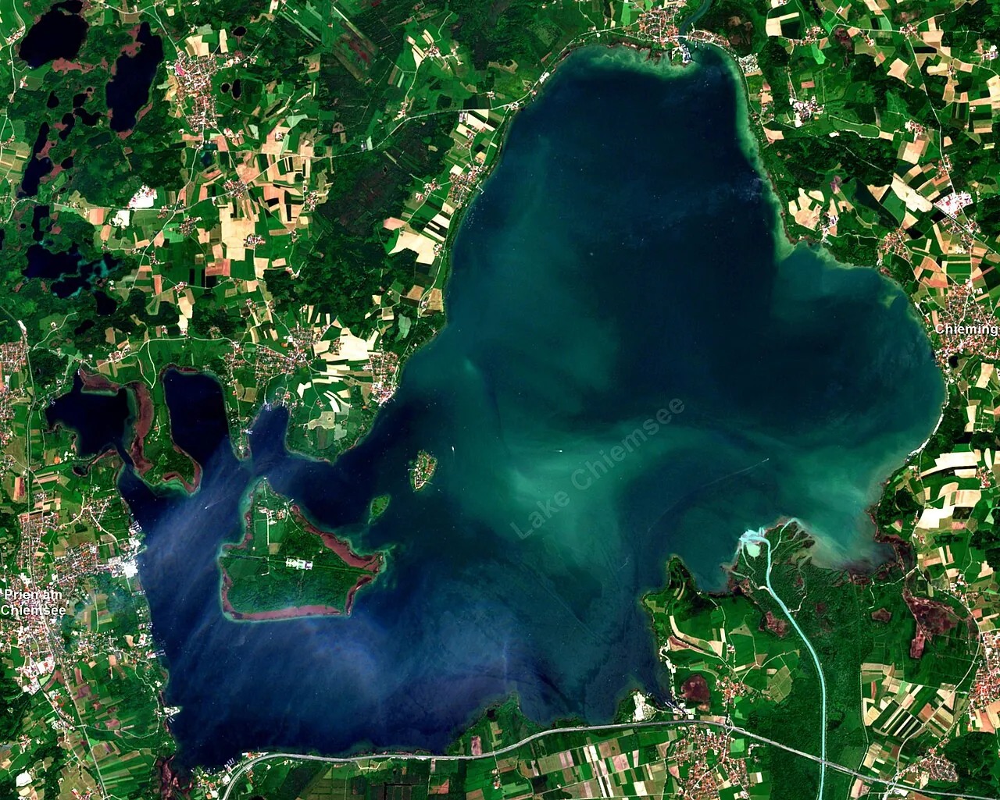
    <div class="frame"></div>
    <div class="inner">
      <div>
        <div class="kicker">
          <span>Cover Feature</span>
          <span class="dot"></span>
          <span>Bayern · Chiemgau</span>
          <span class="dot"></span>
          <span>One Star Above the Achental</span>
        </div>
      </div>

      <div>
        <h1>Forty-eight hours<br>around a <em>three-star</em><br>kitchen.</h1>
      </div>

      <div class="meta">
        <p class="dek">
          A weekend in Grassau, where the Chiemgau Alps tip into Bavaria's largest lake — built around one Saturday-evening table at <a href="https://www.das-achental.com/en/es-senz.html">ES:SENZ</a>, Edip Sigl's three-Michelin-star room inside Das Achental.
        </p>
        <div class="stat"><span class="n">★★★</span><span class="l">Michelin · 2024</span></div>
        <div class="stat"><span class="n">30 km</span><span class="l">Day-trip radius</span></div>
        <div class="stat"><span class="n">€515</span><span class="l">Dine & Sleep / pp</span></div>
      </div>
    </div>
  </section>

  <!-- ──────────────── VERDICT / OPENING ──────────────── -->
  <section class="tg-verdict">
    <div class="row">
      <p class="pullquote">
        <span class="markmark">&ldquo;</span>Anchor on the resort. Watch the calendar. The closure trap will eat any plan that doesn't <em>check the dates first</em>.
      </p>
      <div class="verdict-meta">
        <h3>The Editor's Pin</h3>
        <p>The whole weekend collapses onto one fact: <a href="https://www.das-achental.com/en/es-senz.html">ES:SENZ</a> sits inside <a href="https://www.das-achental.com/en/">Das Achental Resort</a> at Mietenkamer Straße 65<sup><a href="https://www.das-achental.com/en/es-senz.html">[1]</a></sup>. That makes the "walking distance, no driving after dinner" constraint trivial: book the resort's es:senz Dine &amp; Sleep package (from €515 pp/night)<sup><a href="https://www.das-achental.com/en/">[2]</a></sup> and the wine-paired tasting menu becomes a ninety-second walk to your room.</p>
        <p>Everything else in this issue is a deliberate trade against that default — heritage character, island isolation, or a self-catering apartment in Mietenkam.</p>
        <p class="byline">Reporting by Scout · 144 cited sources</p>
      </div>
    </div>
  </section>

  <!-- ──────────────── ANCHOR / DINNER ──────────────── -->
  <section class="tg-anchor">
    <div class="inner">
      <div>
        <p class="tg-section-eyebrow">The Anchor</p>
        <h2>One table.<br>One kitchen.<br><em>One Saturday.</em></h2>
        <p class="dek">
          Edip Sigl is the named culinary director of <a href="https://www.das-achental.com/en/es-senz.html">es:senz</a><sup><a href="https://www.das-achental.com/en/our-head-chef-edip-sigl.html">[36]</a></sup>, awarded the third star in March 2024 — the only three-star kitchen in Bavaria. <a href="https://lesgrandestablesdumonde.com/en/restaurant/es-senz/">Les Grandes Tables du Monde</a> count it among their tasting-menu, wine-paired rooms<sup><a href="https://lesgrandestablesdumonde.com/en/restaurant/es-senz/">[35]</a></sup>. Service runs four nights a week. The doors close more than they open.
        </p>
        <dl class="specs">
          <div class="spec"><dt>Address</dt><dd>Mietenkamer Str. 65, 83224 Grassau</dd></div>
          <div class="spec"><dt>Service</dt><dd>Wed–Sat · 18:30 – 23:00</dd></div>
          <div class="spec"><dt>Format</dt><dd>Tasting menu · wine pairing</dd></div>
          <div class="spec"><dt>Booking</dt><dd>Through Das Achental, not Michelin</dd></div>
          <div class="spec"><dt>House</dt><dd>Das Achental Resort · 4★ · 179 rooms</dd></div>
          <div class="spec"><dt>Walk to room</dt><dd>≈ 90 seconds</dd></div>
        </dl>
      </div>

      <aside class="closure">
        <div class="stamp">Closure Trap</div>
        <h3>The kitchen goes dark<br>seven weeks a year.</h3>
        <p>Two of this expedition's children flagged this independently, and it overrides everything. <a href="https://www.das-achental.com/en/es-senz.html">ES:SENZ</a> is closed on six multi-week windows across 2026<sup><a href="https://www.das-achental.com/en/es-senz.html">[1]</a></sup>:</p>
        <div class="dates">
          <span>02 – 11 Jan</span>
          <span>16 – 22 Feb</span>
          <span>07 – 12 Apr</span>
          <span class="danger">01 – 07 Jun</span>
          <span>31 Aug – 13 Sep</span>
          <span>02 – 15 Nov</span>
        </div>
        <p>If <strong>"Saturday"</strong> lands on <strong>6 June</strong>, the kitchen is closed. <strong>30 May</strong> is the clean fallback. <a href="https://guide.michelin.com/us/en/bayern/grassau/restaurant/es-senz">Michelin lists Wed–Sat 18:30–23:00</a><sup><a href="https://guide.michelin.com/us/en/bayern/grassau/restaurant/es-senz">[6]</a></sup> — phone Das Achental to lock the <em>table</em> before the room.</p>
        <p class="tip">Booking order: 1. confirm date is not in a closure window · 2. ask for the es:senz Dine & Sleep package · 3. confirm the wine pairing</p>
      </aside>
    </div>
  </section>

  <!-- ──────────────── ITINERARY ──────────────── -->
  <section class="tg-itinerary">
    <div class="inner">
      <p class="tg-section-eyebrow">The Itinerary</p>
      <h2>Forty-eight hours,<br><em>scored</em> for the dinner.</h2>
      <p class="lede">
        A magazine itinerary is a suggestion, not a contract — but Saturday's late, long, multi-course evening is the gravitational centre. Front-load anything that pays in legs (a peak, the islands, a long cycle); leave Sunday low-stim before the drive home.
      </p>

      <div class="days">
        <div class="day">
          <p class="daycap">Friday — Arrival</p>
          <h3><em>Soft landing.</em></h3>
          <p class="theme">Settle into the Achental valley. A short walk, an early dinner that isn't the dinner, a long sleep.</p>

          <div class="slot">
            <div class="time">15:00</div>
            <div class="what"><strong>Check in at <a href="https://www.das-achental.com/en/">Das Achental</a></strong>
              <span class="note">2,000 m² spa · infinity pool · book the Dine & Sleep<sup><a href="https://www.das-achental.com/en/">[2]</a></sup></span>
            </div>
          </div>
          <div class="slot">
            <div class="time">16:30</div>
            <div class="what"><strong>Loop the Grassauer Moor on foot</strong>
              <span class="note">flat trail · 60–90 min · sets the legs for tomorrow</span>
            </div>
          </div>
          <div class="slot">
            <div class="time">19:30</div>
            <div class="what"><strong>Beer & schnitzel in the village</strong>
              <span class="note">save the appetite — Saturday will not be light</span>
            </div>
          </div>
          <div class="slot">
            <div class="time">22:00</div>
            <div class="what"><strong>Spa</strong>
              <span class="note">finnish sauna, then sleep</span>
            </div>
          </div>
        </div>

        <div class="day headline">
          <p class="daycap">Saturday — The Anchor</p>
          <h3><em>Big day. Bigger night.</em></h3>
          <p class="theme">One ambitious morning move, an unhurried afternoon, then everything yields to the 18:30 seating.</p>

          <div class="slot">
            <div class="time">08:30</div>
            <div class="what"><strong>Drive to <a href="https://www.kampenwand.de/preise-tickets/ticketpreise-sommer/">Kampenwandbahn</a> in Aschau (~14 km)</strong>
              <span class="note">cable car to 1,461 m · €28 RT off-season<sup><a href="https://www.kampenwand.de/preise-tickets/ticketpreise-sommer/">[7]</a></sup></span>
            </div>
          </div>
          <div class="slot">
            <div class="time">11:00</div>
            <div class="what"><strong>Lunch at <a href="https://www.aschau.de/falknerei-hohenaschau">Burg Hohenaschau</a> via the 11:00 falconry</strong>
              <span class="note">45-min raptor demo · €10 · cash only<sup><a href="https://www.aschau.de/falknerei-hohenaschau">[9]</a></sup></span>
            </div>
          </div>
          <div class="slot">
            <div class="time">14:30</div>
            <div class="what"><strong>Back to the resort spa</strong>
              <span class="note">infinity pool · slow afternoon · do not eat</span>
            </div>
          </div>
          <div class="slot dinner">
            <div class="time">18:30</div>
            <div class="what"><strong>ES:SENZ — Edip Sigl tasting menu</strong>
              <span class="note">90-second walk · wine pairing · plan for four hours at table</span>
            </div>
          </div>
        </div>

        <div class="day">
          <p class="daycap">Sunday — Soft exit</p>
          <h3><em>Lake & leave.</em></h3>
          <p class="theme">The day after a long tasting menu wants quiet water, a slow lunch, and a flexible departure window.</p>

          <div class="slot">
            <div class="time">10:00</div>
            <div class="what"><strong>Ferry from <a href="https://www.uebersee.com/besuchen-informieren/mobil-vor-ort/chiemsee-schifffahrt">Übersee / Feldwies</a></strong>
              <span class="note">25 May – 22 Sep only · 4 sailings · €13.40 RT<sup><a href="https://www.uebersee.com/besuchen-informieren/mobil-vor-ort/chiemsee-schifffahrt">[13]</a></sup></span>
            </div>
          </div>
          <div class="slot">
            <div class="time">11:00</div>
            <div class="what"><strong>Walk <a href="https://www.frauenwoerth.de/en">Fraueninsel</a> · church tour by a nun (€6 · 45 min)</strong>
              <span class="note">car-free island · marzipan & Klosterlikör · whitefish from the fishermen<sup><a href="https://www.frauenwoerth.de/en">[15]</a></sup></span>
            </div>
          </div>
          <div class="slot">
            <div class="time">13:00</div>
            <div class="what"><strong>Lake lunch · smoked Renken & a Weißbier</strong>
              <span class="note">island fishermen sell fresh out of the huts<sup><a href="https://www.bernau-am-chiemsee.de/erleben-genuss/die-chiemsee-inseln/die-fraueninsel">[32]</a></sup></span>
            </div>
          </div>
          <div class="slot">
            <div class="time">15:00</div>
            <div class="what"><strong>Sunbathe at <a href="https://www.chiemsee-chiemgau.info/en/strandbad-uebersee">Strandbad Übersee</a> · drive home</strong>
              <span class="note">Bavaria's longest contiguous sandy beach (5 km)<sup><a href="https://www.chiemsee-chiemgau.info/en/strandbad-uebersee">[14]</a></sup></span>
            </div>
          </div>
        </div>
      </div>
    </div>
  </section>

  <!-- ──────────────── LODGING ──────────────── -->
  <section class="tg-lodging">
    <div class="inner">
      <div class="head">
        <div>
          <p class="tg-section-eyebrow">Where to sleep</p>
          <h2>Six<br><em>plausible</em> rooms.</h2>
        </div>
        <p class="preamble">
          The structural choice is on-site at Das Achental (no driving, wine pairing, ninety-second walk to the room) versus a character property nearby. Heritage, lake-island isolation, or self-catering value — each is a deliberate trade against the default.
        </p>
      </div>

      <div class="grid">

        <article class="card feature">
          <div class="photo">
            
            <div class="ribbon gold">Anchor Choice · On-Site</div>
          </div>
          <div class="body">
            <div class="place">Mietenkamer Straße 65 · Grassau</div>
            <h3><a href="https://www.das-achental.com/en/">Das Achental Resort</a></h3>
            <p class="desc">
              The structurally correct booking: the only address where dinner and bed are the same building. The es:senz Dine &amp; Sleep package bundles the tasting menu with the wine pairing and the room, so the wine pairing isn't a negotiation with a taxi at 23:00. A 2,000 m² spa with infinity pool. Twelve room categories. <a href="https://guide.michelin.com/us/en/hotels-stays/Grassau/das-achental-resort-13234">Michelin Hotels</a> calls it "a perfect representative of modern-rustic Bavarian hospitality."
            </p>
            <div class="meta">
              <span><strong>€515</strong> Dine & Sleep / pp<sup><a href="https://www.das-achental.com/en/">[2]</a></sup></span>
              <span><strong>4★</strong> · 179 rooms</span>
              <span><strong>0 m</strong> to ES:SENZ</span>
              <span><strong>900 m</strong> from Bahnhofstr.<sup><a href="https://www.das-achental.com/en/getting-here.html">[34]</a></sup></span>
            </div>
          </div>
        </article>

        <article class="card">
          <div class="photo">
            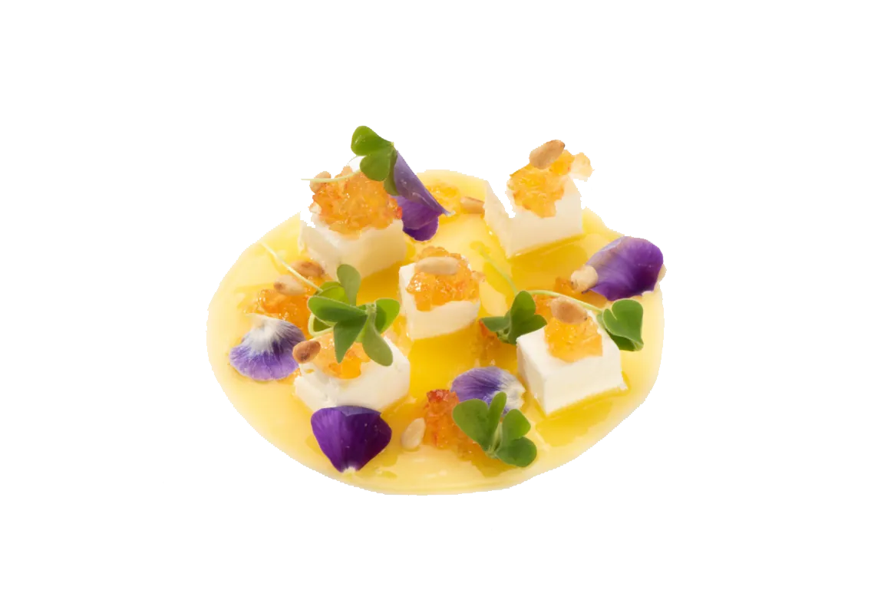
            <div class="ribbon">Heritage · 1405</div>
          </div>
          <div class="body">
            <div class="place">Aschau · ~14 km</div>
            <h3><a href="https://www.residenz-heinz-winkler.de/en/">Residenz Heinz Winkler</a></h3>
            <p class="desc">
              Late-medieval boutique with its own one-star Restaurant Epicures (regained March 2024). 32 rooms. Sleeping at a rival starred kitchen is a tonal call.
            </p>
            <div class="meta">
              <span><strong>1405</strong> heritage</span>
              <span><strong>★</strong> Michelin in-house<sup><a href="https://www.residenz-heinz-winkler.de/en/">[3]</a></sup></span>
            </div>
          </div>
        </article>

        <article class="card">
          <div class="photo">
            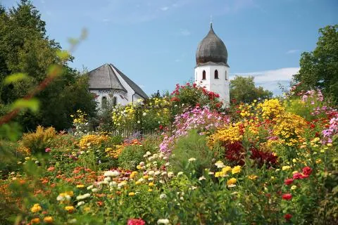
            <div class="ribbon">Island · 600 yrs</div>
          </div>
          <div class="body">
            <div class="place">Fraueninsel · ferry + Nachttaxi</div>
            <h3><a href="http://www.linde-frauenchiemsee.de/impressum.html">Inselhotel zur Linde</a></h3>
            <p class="desc">
              Over six hundred years of hospitality on a car-free Chiemsee island. Works only if you pre-book the Chiemsee Nachttaxi <strong>+49 170 2053542</strong> about 30 min before leaving the mainland after dinner.
            </p>
            <div class="meta">
              <span><strong>600+</strong> years inn<sup><a href="http://www.linde-frauenchiemsee.de/impressum.html">[5]</a></sup></span>
              <span><strong>Until 00:00</strong> Nachttaxi<sup><a href="https://www.chiemsee-schifffahrt.de/de/sonderfahrt/nachttaxifahrten">[16]</a></sup></span>
            </div>
          </div>
        </article>

        <article class="card">
          <div class="photo">
            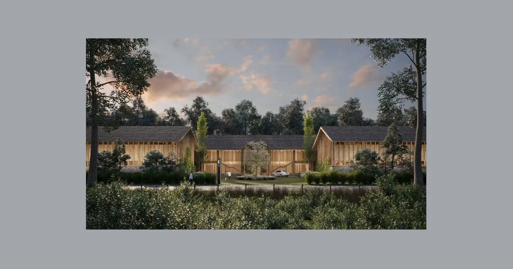
            <div class="ribbon">Design · LHW</div>
          </div>
          <div class="body">
            <div class="place">Übersee · ~7 km</div>
            <h3><a href="https://www.chiemgauhof.com/en/">Chiemgauhof Lakeside Retreat</a></h3>
            <p class="desc">
              28 lakeside suites designed by Matteo Thun. The lake-modern option — quiet, Leading Hotels of the World pedigree, Strandbad Übersee on the doorstep.
            </p>
            <div class="meta">
              <span><strong>LHW</strong> member</span>
              <span><strong>Matteo Thun</strong> design<sup><a href="https://www.chiemgauhof.com/en/">[12]</a></sup></span>
            </div>
          </div>
        </article>

        <article class="card">
          <div class="photo">
            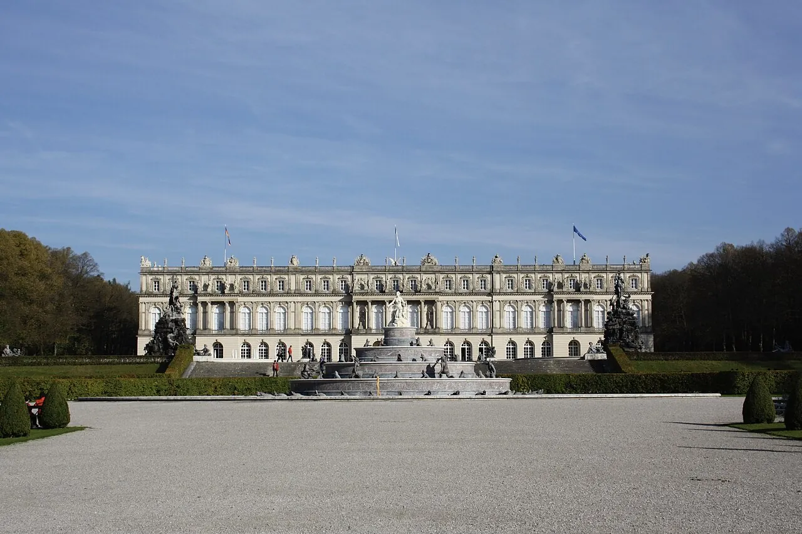
            <div class="ribbon">Castle · 1477</div>
          </div>
          <div class="body">
            <div class="place">Bernau · ~10 km</div>
            <h3><a href="https://www.booking.com/hotel/de/bonnschloessl.html">Hotel Bonnschlössl</a></h3>
            <p class="desc">
              Fifteenth-century Schloss converted by actor Ferdinand Bonn into a small castle in the early 20th century. Now ten luxury apartments with a steam bath, Finnish sauna, park grounds. Bernau is in its 1,100-year jubilee year in 2026.
            </p>
            <div class="meta">
              <span><strong>1477</strong> built<sup><a href="https://www.booking.com/hotel/de/bonnschloessl.html">[4]</a></sup></span>
              <span><strong>1100</strong>-year jubilee<sup><a href="https://www.bayerische-staatszeitung.de/staatszeitung/freizeit-und-reise/detailansicht-reisen/artikel/mai-allerlei-im-chiemsee-alpenland.html">[10]</a></sup></span>
            </div>
          </div>
        </article>

        <article class="card">
          <div class="photo">
            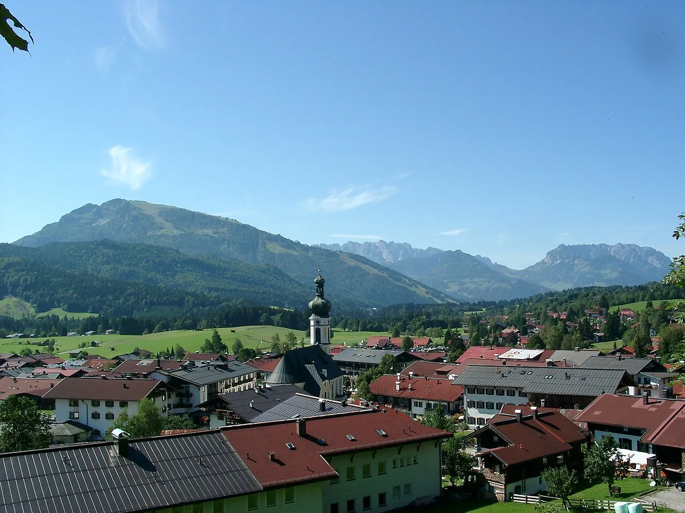
            <div class="ribbon">Stone · 1604</div>
          </div>
          <div class="body">
            <div class="place">Übersee/Seethal · ~6 km</div>
            <h3><a href="https://farmhouse1604.com/">Farmhouse 1604</a></h3>
            <p class="desc">
              Listed fisherman's stone house, foundation stone 1604, now four apartments (95–230 m²) sleeping 2–8, with electric-boat lake access and an outdoor sauna. The right pick for a family of four.
            </p>
            <div class="meta">
              <span><strong>1604</strong> foundation<sup><a href="https://farmhouse1604.com/">[11]</a></sup></span>
              <span><strong>4</strong> apartments</span>
            </div>
          </div>
        </article>

      </div>
    </div>
  </section>

  <!-- ──────────────── ACTIVITIES ──────────────── -->
  <section class="tg-activities">
    <div class="inner">
      <p class="tg-section-eyebrow">What to do · 30 km radius</p>
      <h2>Up the peaks,<br>across the <em>islands</em>,<br>into the brine.</h2>
      <p class="lede">
        Inside the day-trip radius from Mietenkamer Straße: three cable cars, two Wittelsbach palaces, an iodine thermal spring drilled to 5,000 m, a 1,100-year-old village in jubilee dress, Bavaria's longest contiguous sandy beach, and a 1,100 m alpine coaster.
      </p>

      <!-- HERO FEATURE: Chiemsee islands -->
      <article class="feature-row">
        <div class="left">
          <p class="cap">Feature · Day Trip One</p>
          <h3>The <em>two islands</em> of Chiemsee, in a Sunday.</h3>
          <p>Year-round ferries from <a href="https://www.chiemsee-schifffahrt.de/en/home">Prien/Stock</a> reach the Herreninsel in twenty minutes; from there a 15-minute walk through fields and woods arrives at <a href="https://www.herrenchiemsee.de/englisch/tourist/opening.htm">Ludwig II's Schloss Herrenchiemsee</a>, his Versailles-on-a-lake — access only via guided tour, €11<sup><a href="https://www.herrenchiemsee.de/englisch/tourist/admiss.htm">[20]</a></sup>. The smaller <a href="https://www.frauenwoerth.de/en">Fraueninsel</a> is older still: <a href="https://www.frauenwoerth.de/en">Abtei Frauenwörth</a>, founded 772, is the oldest convent in Germany still in operation, with a Carolingian Torhalle from c.850 and a three-aisled minster of c.1100 holding eleven altars and early-Romanesque frescoes.</p>
          <p>Nuns sell marzipan and the herbal Chiemseer Klosterlikör; island fishermen smoke whitefish from huts on the shore<sup><a href="https://www.bernau-am-chiemsee.de/erleben-genuss/die-chiemsee-inseln/die-fraueninsel">[32]</a></sup>.</p>
          <div class="factbar">
            <div><span class="n">772</span><span class="l">Convent founded</span></div>
            <div><span class="n">€11</span><span class="l">Herrenchiemsee tour</span></div>
            <div><span class="n">€6</span><span class="l">Nun-guided abbey tour</span></div>
            <div><span class="n">20 min</span><span class="l">Prien → Herreninsel</span></div>
          </div>
        </div>
        <div class="right">
          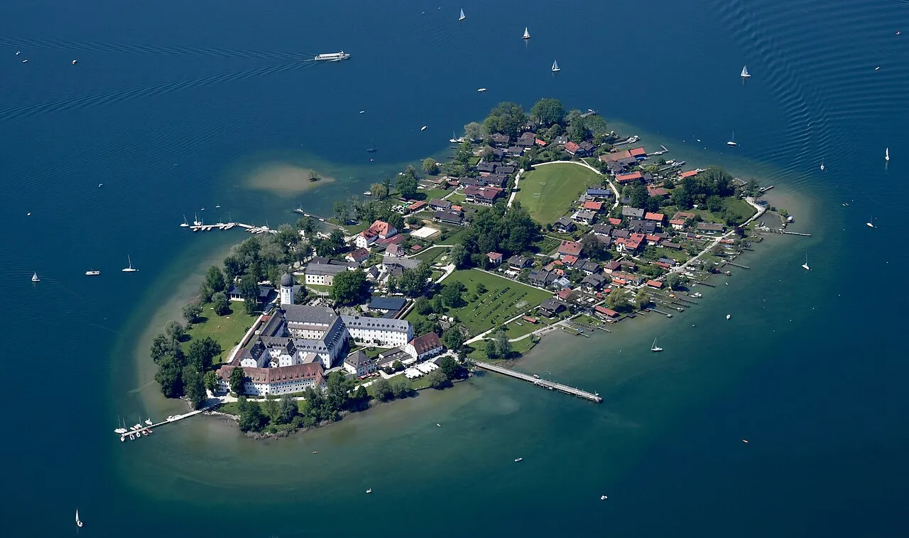
        </div>
      </article>

      <!-- GALLERY: alpine activities -->
      <div class="gallery">

        <article class="tile">
          <div class="photo">
            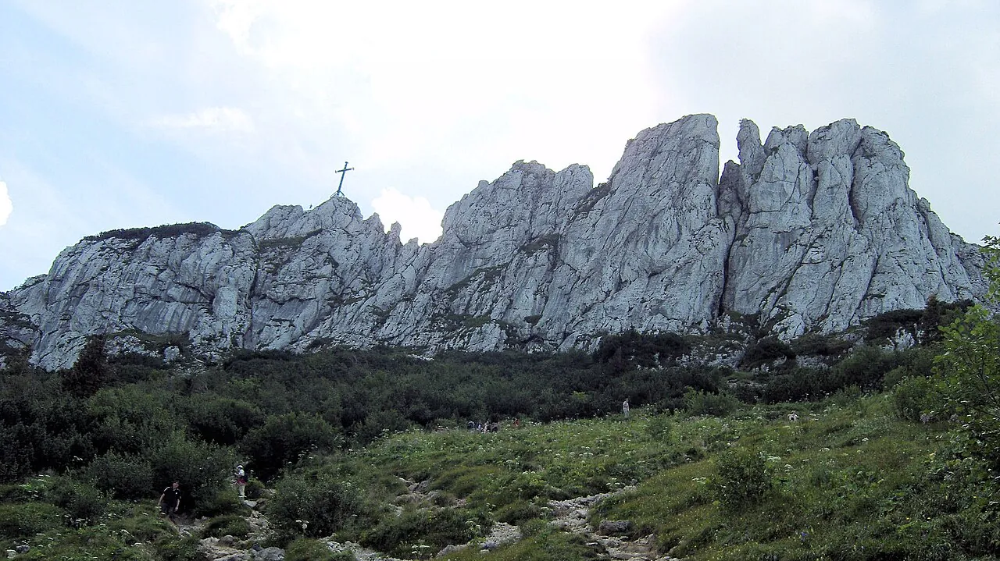
            <div class="glyph">Peak · gondola</div>
          </div>
          <div class="body">
            <h4><a href="https://www.kampenwand.de/preise-tickets/ticketpreise-sommer/">Kampenwand</a> · Aschau</h4>
            <p class="desc">Three-pointed rocky backdrop at 1,669 m; cable car to 1,461 m and a hundred-plus secured climbing routes; views Berchtesgaden → Hohe Tauern<sup><a href="https://www.chiemsee-chiemgau.info/en/kampenwandbahn-aschau-en">[30]</a></sup>.</p>
            <div class="specs">
              <span><strong>€28</strong> RT</span>
              <span><strong>9–17</strong></span>
              <span><strong>14 km</strong> from Grassau</span>
            </div>
          </div>
        </article>

        <article class="tile">
          <div class="photo">
            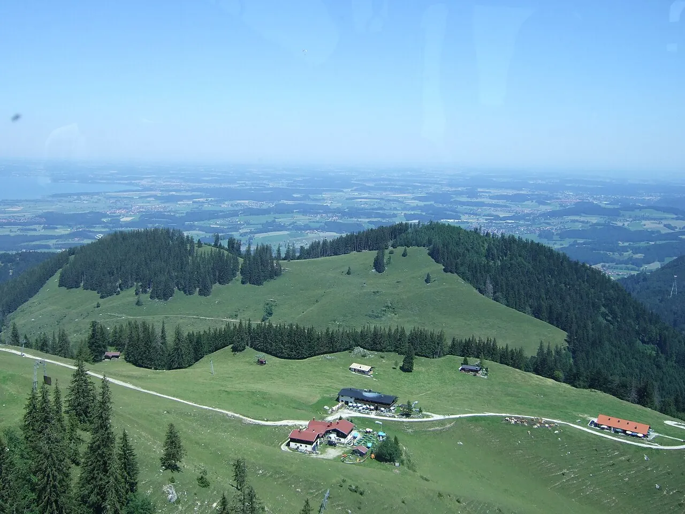
            <div class="glyph">Peak · cable car</div>
          </div>
          <div class="body">
            <h4><a href="https://www.hochfellnseilbahn.de/sommerpreise-2023">Hochfelln</a> · Bergen</h4>
            <p class="desc">1,674 m viewing terrace reached in 15 minutes via two gondolas; one of the most beautiful panorama summits in Chiemgau<sup><a href="https://www.chiemsee-hotel-wassermann.de/en/cable-car-chiemgau/hochfelln-seilbahn.htm">[24]</a></sup>.</p>
            <div class="specs">
              <span><strong>€30</strong> RT</span>
              <span><strong>15 min</strong> ascent</span>
              <span>from <strong>25 Apr</strong></span>
            </div>
          </div>
        </article>

        <article class="tile">
          <div class="photo">
            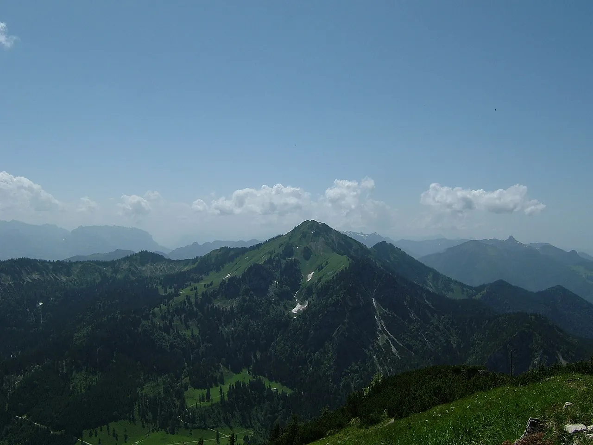
            <div class="glyph">Peak · hike only</div>
          </div>
          <div class="body">
            <h4><a href="https://www.chiemsee-chiemgau.info/en/hochgern">Hochgern</a> · Marquartstein</h4>
            <p class="desc">1,748 m by foot from Marquartstein: 16.2 km, 1,128 m up, ~8 hours; year-round <strong>Hochgernhaus</strong> refuge; panoramas to the Großglockner.</p>
            <div class="specs">
              <span><strong>1,748 m</strong></span>
              <span><strong>~8 h</strong></span>
              <span><strong>difficult</strong></span>
            </div>
          </div>
        </article>

        <article class="tile">
          <div class="photo">
            
            <div class="glyph">Palace · ferry</div>
          </div>
          <div class="body">
            <h4><a href="https://www.herrenchiemsee.de/englisch/tourist/opening.htm">Schloss Herrenchiemsee</a></h4>
            <p class="desc">Ludwig II's unfinished Versailles. Daily summer 9–18, guided tours only; from the pier a 15-min walk through fields and woods (or horse-drawn carriage)<sup><a href="https://www.herrenchiemsee.de/englisch/tourist/opening.htm">[19]</a></sup>.</p>
            <div class="specs">
              <span><strong>€11</strong> tour</span>
              <span><strong>9–18</strong></span>
              <span><strong>40 min</strong> guided</span>
            </div>
          </div>
        </article>

        <article class="tile">
          <div class="photo">
            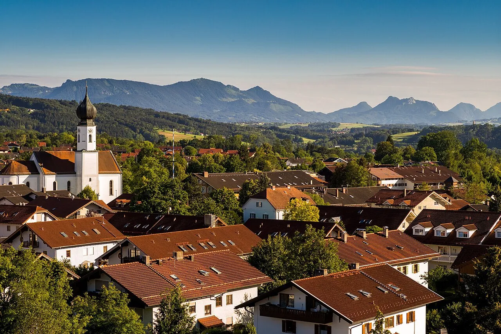
            <div class="glyph">Thermal · spa</div>
          </div>
          <div class="body">
            <h4><a href="https://www.chiemgau-thermen.de/preise/">Chiemgau Thermen</a> · Bad Endorf</h4>
            <p class="desc">One of Europe's strongest iodine thermal springs (~35 °C), drilled in 1962 to 5,000 m. 1,800 m² of water surface, rock lagoon, 125-m current channel<sup><a href="https://www.chiemsee-chiemgau.info/en/bad-endorf-chiemgau-thermen">[22]</a></sup>.</p>
            <div class="specs">
              <span><strong>€31</strong> day</span>
              <span><strong>€39</strong> + sauna<sup><a href="https://www.chiemgau-thermen.de/preise/">[21]</a></sup></span>
              <span><strong>21 km</strong></span>
            </div>
          </div>
        </article>

        <article class="tile">
          <div class="photo">
            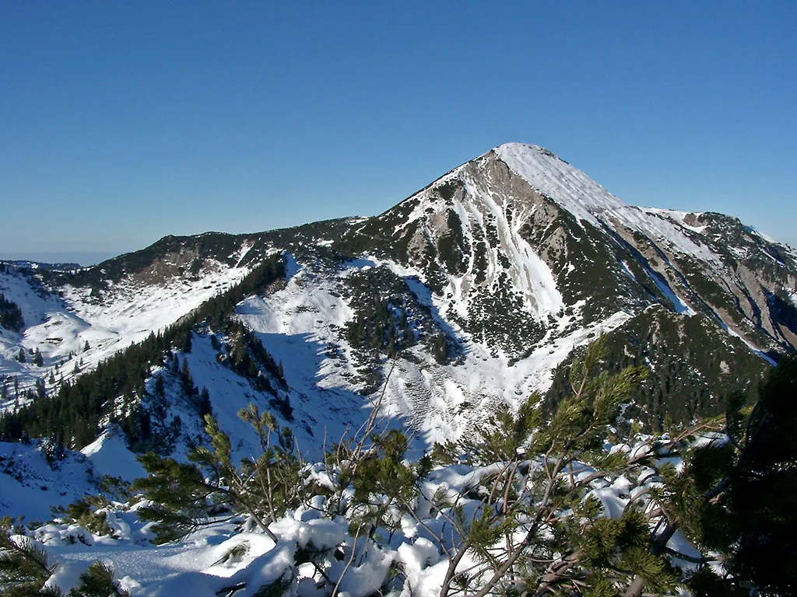
            <div class="glyph">Peak · serious</div>
          </div>
          <div class="body">
            <h4><a href="https://www.chiemsee-alpenland.de/entdecken/tourenportal/geigelstein-gipfel-vom-bergsteigerdorf-schleching-aus-10f1672476">Geigelstein</a> · Schleching</h4>
            <p class="desc">1,808 m round-tour: 14.9 km, 1,225 m up, ~6h45min, no cable car. Closed late March–late May in the Roßalm nature reserve.</p>
            <div class="specs">
              <span><strong>1,808 m</strong></span>
              <span><strong>6h45</strong></span>
              <span><strong>moderate+</strong></span>
            </div>
          </div>
        </article>

        <article class="tile">
          <div class="photo">
            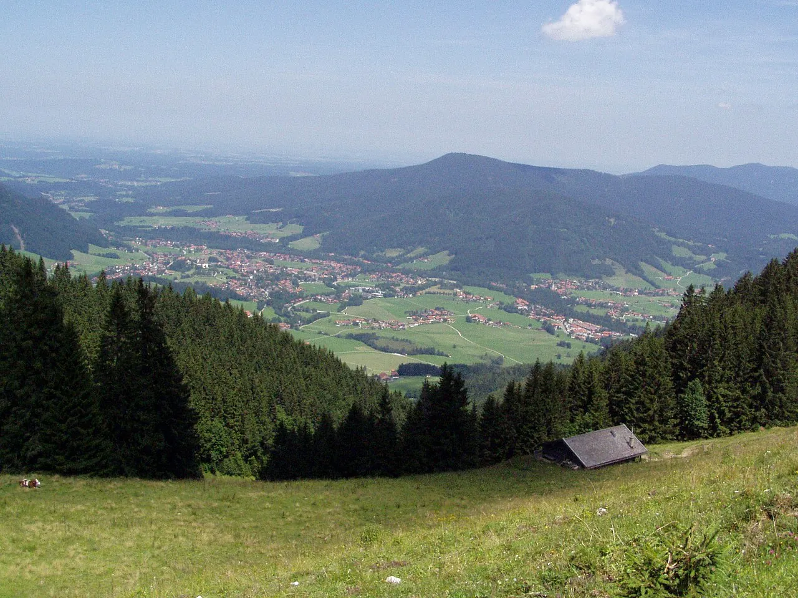
            <div class="glyph">Coaster · summer</div>
          </div>
          <div class="body">
            <h4><a href="https://www.chiemgau-coaster.de/preise-zeiten">Chiemgau Coaster</a> · Ruhpolding</h4>
            <p class="desc">1,100 m alpine coaster with two loops and a 7 m fly-over of a hiking trail. Daily 10–18, June through early November<sup><a href="https://www.chiemgau-coaster.de/preise-zeiten">[31]</a></sup>.</p>
            <div class="specs">
              <span><strong>€6</strong> single</span>
              <span><strong>€33</strong> 1 h</span>
              <span><strong>27 km</strong></span>
            </div>
          </div>
        </article>

        <article class="tile">
          <div class="photo">
            
            <div class="glyph">Beach · free</div>
          </div>
          <div class="body">
            <h4><a href="https://www.chiemsee-chiemgau.info/en/strandbad-uebersee">Strandbad Übersee</a></h4>
            <p class="desc">Bavaria's longest contiguous sandy beach — 5 km along Feldwieser Bay — with a 40,000 m² lido, a modern Strandcafé, volleyball, kiosks.</p>
            <div class="specs">
              <span><strong>5 km</strong> sand</span>
              <span><strong>40,000 m²</strong></span>
              <span><strong>7 km</strong></span>
            </div>
          </div>
        </article>

        <article class="tile">
          <div class="photo">
            
            <div class="glyph">Village · ski-town</div>
          </div>
          <div class="body">
            <h4><a href="https://www.reitimwinkl.de/en/museums-and-sights">Reit im Winkl</a></h4>
            <p class="desc">A storybook alpine valley town — Heimatmuseum, one of Europe's biggest ski-museum collections, the Catholic Pfarrkirche St. Pankratius; ~18 km from Grassau.</p>
            <div class="specs">
              <span><strong>18 km</strong></span>
              <span><strong>200 km</strong> XC trails</span>
            </div>
          </div>
        </article>

      </div>
    </div>
  </section>

  <!-- ──────────────── VILLAGES / COMPOUND ──────────────── -->
  <section class="tg-villages">
    <div class="inner">
      <p class="tg-section-eyebrow" style="color:#e8c97d;">Where it compounds</p>
      <h2>Four villages<br>that <em>appear twice</em>.</h2>
      <p class="lede">
        These four villages turn up in <em>both</em> the lodging sub-topic and the day-trip sub-topic — which is where the weekend stops being a list and starts being a circuit. Sleep in one of them, and the dawn coffee is also tomorrow's activity.
      </p>

      <div class="grid">

        <article class="vc">
          <h3 class="name">Aschau</h3>
          <p class="dist">≈ 14 km · 20 min drive</p>
          <p class="note">Hosts a rival one-star kitchen (Residenz Heinz Winkler) and a cable car to 1,461 m; a daily falconry show in the castle courtyard at 11:00 &amp; 15:00.</p>
          <ul>
            <li><a href="https://www.residenz-heinz-winkler.de/en/">Residenz Winkler ★</a></li>
            <li><a href="https://www.kampenwand.de/preise-tickets/ticketpreise-sommer/">Kampenwandbahn</a></li>
            <li><a href="https://www.aschau.de/schloss-hohenaschau">Schloss Hohenaschau</a></li>
            <li><a href="https://www.aschau.de/falknerei-hohenaschau">Falknerei</a></li>
          </ul>
        </article>

        <article class="vc">
          <h3 class="name">Bernau</h3>
          <p class="dist">≈ 10 km · jubilee year</p>
          <p class="note">In its 1,100-year jubilee year in 2026 with a traditional Maibaumaufstellen in the village centre; Hotel Bonnschlössl occupies a 1477 Schloss converted by an actor.</p>
          <ul>
            <li><a href="https://www.booking.com/hotel/de/bonnschloessl.html">Hotel Bonnschlössl</a></li>
            <li><a href="https://www.bayerische-staatszeitung.de/staatszeitung/freizeit-und-reise/detailansicht-reisen/artikel/mai-allerlei-im-chiemsee-alpenland.html">1,100-yr jubilee</a></li>
          </ul>
        </article>

        <article class="vc">
          <h3 class="name">Übersee</h3>
          <p class="dist">≈ 7 km · lake gate</p>
          <p class="note">Closest Chiemsee ferry pier (25 May – 22 Sep, 4 sailings/day), Bavaria's longest sandy beach, and two strong lodging picks: Farmhouse 1604 and the Matteo-Thun-designed Chiemgauhof.</p>
          <ul>
            <li><a href="https://farmhouse1604.com/">Farmhouse 1604</a></li>
            <li><a href="https://www.chiemgauhof.com/en/">Chiemgauhof</a></li>
            <li><a href="https://www.uebersee.com/besuchen-informieren/mobil-vor-ort/chiemsee-schifffahrt">Feldwies ferry</a></li>
            <li><a href="https://www.chiemsee-chiemgau.info/en/strandbad-uebersee">Strandbad</a></li>
          </ul>
        </article>

        <article class="vc">
          <h3 class="name">Fraueninsel</h3>
          <p class="dist">Lake island · Nachttaxi</p>
          <p class="note">Sleeping on a car-free Benedictine island only works with the Chiemsee Nachttaxi (+49 170 2053542, ~30 min before) — and it's also the canonical day-trip: the 772-founded abbey, Carolingian Torhalle, nun-led tour.</p>
          <ul>
            <li><a href="http://www.linde-frauenchiemsee.de/impressum.html">Inselhotel zur Linde</a></li>
            <li><a href="https://www.frauenwoerth.de/en">Abtei Frauenwörth</a></li>
            <li><a href="https://www.chiemsee-schifffahrt.de/de/sonderfahrt/nachttaxifahrten">Nachttaxi</a></li>
          </ul>
        </article>

      </div>
    </div>
  </section>

  <!-- ──────────────── TECH ANCHOR ──────────────── -->
  <section class="tg-tech">
    <div class="inner">
      <div class="panel">
        <div class="body">
          <p class="cap">Side Bar · For the engineer who travels</p>
          <h3>If the trip should <em>double</em> as a conference run.</h3>
          <p>The 30 km radius covers Traunstein and Rosenheim — a small but active scene: the <a href="https://www.stellwerk18.de/veranstaltungen/">Stellwerk18</a> startup centre, TH Rosenheim's Campus Chiemgau, the <strong>ROSIK e.V.</strong> IT network. Only one ticketed full-day tech event lives inside the radius this autumn: <a href="https://www.ppc-camp.de/">PPC Camp 2026</a> at KuKo Rosenheim on <strong>29 October</strong> — a Thursday, which leaves Friday or Saturday free to carry the ES:SENZ booking cleanly.</p>
          <div class="deadline">⚠ Early Bird (€349) closes 4 June 2026 · regular €399 afterwards</div>
        </div>
        <div class="visual">
          
        </div>
      </div>
    </div>
  </section>

  <!-- ──────────────── BOOKING CHECKLIST ──────────────── -->
  <section class="tg-booking">
    <div class="inner">
      <p class="tg-section-eyebrow">Before you lock the room</p>
      <h2>The <em>four-step</em> booking order.</h2>
      <p class="lede">
        The wine pairing makes the on-site stay structurally correct; off-site picks only win if Das Achental is sold out or you're staying multiple nights. Run these four checks before paying for anything.
      </p>

      <div class="checklist">
        <div class="item">
          <div class="num">1.</div>
          <div>
            <h4>Confirm the date isn't in a closure window</h4>
            <p>Cross-check your Saturday against the six 2026 closures<sup><a href="https://www.das-achental.com/en/es-senz.html">[1]</a></sup>. <strong>1–7 June</strong> is the trap that catches everyone planning a "first-week-of-summer" trip.</p>
          </div>
        </div>
        <div class="item">
          <div class="num">2.</div>
          <div>
            <h4>Lock the table — through Das Achental, not Michelin</h4>
            <p>Tasting-menu, wine-paired three-star room. Booking flows through the resort so it can attach to a Dine &amp; Sleep package; calling Michelin direct bypasses that.</p>
          </div>
        </div>
        <div class="item">
          <div class="num">3.</div>
          <div>
            <h4>Ask explicitly for the Dine &amp; Sleep package</h4>
            <p>From €515 pp/night<sup><a href="https://www.das-achental.com/en/">[2]</a></sup>. Bundles wine pairing + room + access to the 2,000 m² spa. The naïve "book room separately" path costs more and loses the package logic.</p>
          </div>
        </div>
        <div class="item">
          <div class="num">4.</div>
          <div>
            <h4>If the trip is a multi-night, pivot to character lodging</h4>
            <p>One night → on-site. Two-plus → trade in for <a href="https://www.residenz-heinz-winkler.de/en/">Residenz Winkler</a>, <a href="https://www.booking.com/hotel/de/bonnschloessl.html">Bonnschlössl</a>, <a href="https://www.chiemgauhof.com/en/">Chiemgauhof</a> or <a href="https://farmhouse1604.com/">Farmhouse 1604</a> for the other nights and keep the Saturday at Das Achental.</p>
          </div>
        </div>
      </div>
    </div>
  </section>

  <!-- ──────────────── COLOPHON ──────────────── -->
  <footer class="tg-colophon">
    <div class="inner">
      <h3>Sources & colophon</h3>
      <div class="grid">
        <p><span class="n">[1]</span> <a href="https://www.das-achental.com/en/es-senz.html">das-achental.com — es:senz, closure windows</a></p>
        <p><span class="n">[2]</span> <a href="https://www.das-achental.com/en/">das-achental.com — Dine &amp; Sleep package</a></p>
        <p><span class="n">[3]</span> <a href="https://www.residenz-heinz-winkler.de/en/">residenz-heinz-winkler.de</a></p>
        <p><span class="n">[4]</span> <a href="https://www.booking.com/hotel/de/bonnschloessl.html">booking.com — Bonnschlössl</a></p>
        <p><span class="n">[5]</span> <a href="http://www.linde-frauenchiemsee.de/impressum.html">linde-frauenchiemsee.de</a></p>
        <p><span class="n">[6]</span> <a href="https://guide.michelin.com/us/en/bayern/grassau/restaurant/es-senz">guide.michelin.com — ES:SENZ</a></p>
        <p><span class="n">[7]</span> <a href="https://www.kampenwand.de/preise-tickets/ticketpreise-sommer/">kampenwand.de — summer tickets</a></p>
        <p><span class="n">[9]</span> <a href="https://www.aschau.de/falknerei-hohenaschau">aschau.de — Falknerei</a></p>
        <p><span class="n">[10]</span> <a href="https://www.bayerische-staatszeitung.de/staatszeitung/freizeit-und-reise/detailansicht-reisen/artikel/mai-allerlei-im-chiemsee-alpenland.html">bayerische-staatszeitung.de — Bernau 1,100</a></p>
        <p><span class="n">[11]</span> <a href="https://farmhouse1604.com/">farmhouse1604.com</a></p>
        <p><span class="n">[12]</span> <a href="https://www.chiemgauhof.com/en/">chiemgauhof.com</a></p>
        <p><span class="n">[13]</span> <a href="https://www.uebersee.com/besuchen-informieren/mobil-vor-ort/chiemsee-schifffahrt">uebersee.com — Chiemsee Schifffahrt</a></p>
        <p><span class="n">[14]</span> <a href="https://www.chiemsee-chiemgau.info/en/strandbad-uebersee">chiemsee-chiemgau.info — Strandbad</a></p>
        <p><span class="n">[15]</span> <a href="https://www.frauenwoerth.de/en">frauenwoerth.de</a></p>
        <p><span class="n">[16]</span> <a href="https://www.chiemsee-schifffahrt.de/de/sonderfahrt/nachttaxifahrten">chiemsee-schifffahrt.de — Nachttaxi</a></p>
        <p><span class="n">[17]</span> <a href="https://www.ppc-camp.de/">ppc-camp.de</a></p>
        <p><span class="n">[18]</span> <a href="https://www.stellwerk18.de/veranstaltungen/">stellwerk18.de — Events</a></p>
        <p><span class="n">[19]</span> <a href="https://www.herrenchiemsee.de/englisch/tourist/opening.htm">herrenchiemsee.de — Opening hours</a></p>
        <p><span class="n">[20]</span> <a href="https://www.herrenchiemsee.de/englisch/tourist/admiss.htm">herrenchiemsee.de — Admission</a></p>
        <p><span class="n">[21]</span> <a href="https://www.chiemgau-thermen.de/preise/">chiemgau-thermen.de — Prices</a></p>
        <p><span class="n">[22]</span> <a href="https://www.chiemsee-chiemgau.info/en/bad-endorf-chiemgau-thermen">chiemsee-chiemgau.info — Thermen overview</a></p>
        <p><span class="n">[24]</span> <a href="https://www.chiemsee-hotel-wassermann.de/en/cable-car-chiemgau/hochfelln-seilbahn.htm">Hochfelln cable car</a></p>
        <p><span class="n">[30]</span> <a href="https://www.chiemsee-chiemgau.info/en/kampenwandbahn-aschau-en">chiemsee-chiemgau.info — Kampenwand</a></p>
        <p><span class="n">[31]</span> <a href="https://www.chiemgau-coaster.de/preise-zeiten">chiemgau-coaster.de</a></p>
        <p><span class="n">[32]</span> <a href="https://www.bernau-am-chiemsee.de/erleben-genuss/die-chiemsee-inseln/die-fraueninsel">bernau-am-chiemsee.de — Fraueninsel</a></p>
        <p><span class="n">[34]</span> <a href="https://www.das-achental.com/en/getting-here.html">das-achental.com — getting here</a></p>
        <p><span class="n">[35]</span> <a href="https://lesgrandestablesdumonde.com/en/restaurant/es-senz/">lesgrandestablesdumonde.com — es:senz</a></p>
        <p><span class="n">[36]</span> <a href="https://www.das-achental.com/en/our-head-chef-edip-sigl.html">das-achental.com — Edip Sigl</a></p>
      </div>
      <div class="credit">
        <span>Reporting · Scout · 144 cited sources</span>
        <span>Images · Wikimedia Commons + venue OG · attributed at source</span>
        <span>This is the magazine treatment · the canonical lives one click back</span>
      </div>
    </div>
  </footer>

</article>
